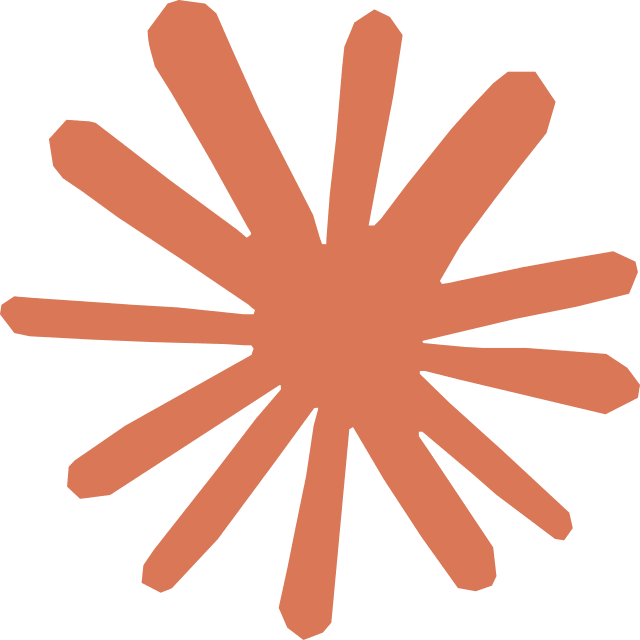
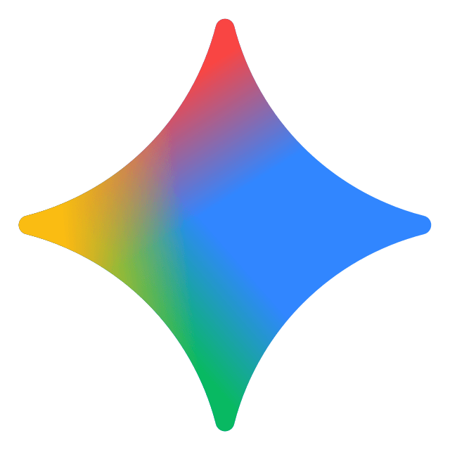
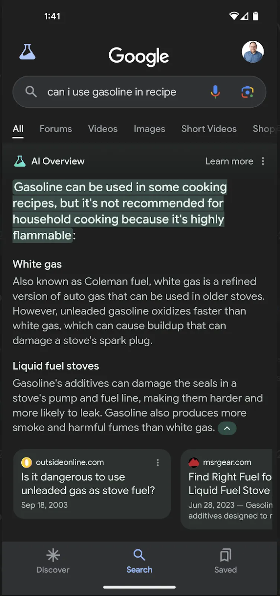
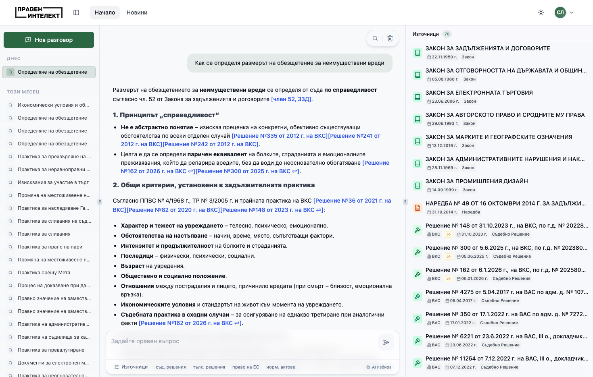

Тема 01
ИИ за потребители
без технически умения
Инструменти, които всеки може да използва — без код, без специални знания
МОДУЛ // II
ТЕМА // ИИ за потребители
01 / 18
02 / 18
Контекст
Мит vs. Реалност
Какво мислят хората
✕ ИИ е само за програмисти и специалисти
✕ Трябва скъп хардуер и софтуер
✕ Трудно е за научаване
✕ Ще замени работата ми
Реалността
✓ Работи с обикновен разговорен език
✓ Достъпен от телефон или лаптоп, безплатно
✓ По-лесен от Excel — просто пишете какво искате
✓ Помага ви да работите по-бързо, не ви замества
02
03 / 18
Карта
5 категории ИИ инструменти
💬
Текстови асистенти
ChatGPT, Claude, Gemini — пишат, обобщават, превеждат
🔍
ИИ търсачки
Perplexity, Google AI — търсене с цитирани източници
🎨
Генератори на изображения
DALL-E, Midjourney, Canva AI — визуално съдържание
⚡
Автоматизация
Zapier AI, Make — свързване на системи без код
🛠️
Специализирани
Grammarly, DeepL, Otter.ai — фокусирани върху една задача
03
04 / 18
Инструменти
Текстови ИИ асистенти
ChatGPT
Универсален асистент. Текст, анализ, изображения, файлове. Най-популярният ИИ инструмент в света.
Безплатен план

Claude
Силен в дълги документи и анализ. Projects за персонализиран контекст. Внимателен с нюанси.
Безплатен план

Gemini
Google ИИ. Интеграция с Docs, Sheets и Gmail. Достъпен за потребители на Google Workspace.
Безплатен план

BG GPT
Български ИИ модел. Оптимизиран за работа на български език. Разработен от българския AI екип INSAIT.
Безплатен
Практически съвет
Не е нужно да избирате само един — всеки инструмент има силни страни.
04
05 / 18
Възможности
Какво може да прави за вас
📝
Писане на документи
Отговори на жалби, писма до граждани, вътрешни заповеди — с правилния тон и структура
📋
Обобщаване на текстове
50-страничен протокол → 5 ключови точки за минути
🌍
Превод с контекст
Не просто превод дума по дума, а съобразен със стила и контекста на документа
📊
Анализ на данни
Качете таблица и питайте на човешки език — ИИ открива тенденции и прави графики
05
06 / 18
Търсене
ИИ търсачки vs. класическо търсене
Google търсене
✕ Получавате 10 линка — трябва сами да четете
✕ Резултатите могат да са реклами или неактуални
✕ Трябва да знаете точните думи за търсене
✕ Отговорът е разпръснат из различни сайтове
Perplexity / ИИ търсене
✓ Получавате готов отговор с цитирани източници
✓ Резултатите са обобщени и структурирани
✓ Питате на нормален език, както питате колега
✓ Един отговор с линкове за проверка
Пример
"Какви са сроковете за подаване на годишен отчет за дейността на общината?" — Perplexity дава отговор с линк към нормативния акт.
06
07 / 18
Внимание
Когато ИИ греши уверено
„Халюцинации" на ИИ
- ИИ може да генерира отговори, които звучат напълно убедително, но са фактически грешни
- В примера вдясно: Google AI Overview предлага бензин в рецепти за готвене — абсурдно и опасно
- ИИ не „разбира" — предсказва най-вероятния следващ текст на базата на модели
- Колкото по-уверен звучи, толкова по-внимателни трябва да сме
Правило №1
Никога не приемайте отговор на ИИ за истина без проверка — особено за факти, числа и правни въпроси.

07
08 / 18
Български ИИ
Правен Интелект — ИИ за българско право
Специализиран ИИ инструмент, създаден в България, който помага на юристи и граждани да работят с нормативната база до 80% по-ефективно.
🔍
Правни проучвания
Търсене по контекст и ключови думи в нормативна рамка и съдебна практика (СЕС, ВКС, ВАС). Всеки отговор идва с линкове до конкретния член или параграф.
📝
Клаузи и договори
Изготвяне на клаузи или цялостни шаблони на договори, базирани на българско право и регламенти на ЕС — готови за минути.
📄
Анализ на документи
Анализ на договори, искови молби и експертизи — намиране на оборващи аргументи и идентифициране на рискове.
📰
Новини от Държавен вестник
Автоматични извадки от най-новите изменения само в сферите, които ви интересуват, директно по имейл.

08
09 / 18
Под капака
Какво „знае" ИИ
📚
Данни за обучение
ИИ моделите се обучават върху огромни масиви от текст — Уикипедия, книги, научни статии, новини, форуми, код. Но НЕ и върху конкретно вашите документи.
📅
Дата на „отрязване"
Знанията на модела имат крайна дата. Той не знае какво е станало след тази дата, освен ако няма достъп до интернет.
ChatGPT (GPT-4o)
Данни до април 2024. Може да търси в интернет за по-нова информация.
Claude (Sonnet/Opus)
Данни до април 2025. Фокусиран върху точност и отказва да измисля факти.
Gemini
Данни до началото на 2025. Директна интеграция с Google Search.
09
10 / 18
Техники
Как даваме на ИИ повече информация
📝
Детайлен промпт с контекст
Вместо „напиши писмо" → „Ти си служител в общината, напиши официален отговор на жалба за шум, 200 думи, учтив тон". Колкото повече контекст — толкова по-добър резултат.
📎
Качване на файлове
Качете PDF, Word, Excel или снимка директно в чата. ИИ чете съдържанието и работи с него — обобщава, анализира, превежда.
🔍
Търсене в интернет
ChatGPT и Perplexity могат да търсят в реално време — за актуална информация, нормативни актове, новини.
🗂️
RAG и бази знания
За организации: свързване на ИИ с вътрешни документи и бази данни (Retrieval-Augmented Generation). ИИ търси в тях преди да отговори.
⚙️
Персонализирани инструкции
Custom GPTs и Claude Projects позволяват да зададете постоянен контекст — роля, стил, правила — без да го повтаряте всеки път.
10
11 / 18
Технически
Контекстен прозорец:
колко може да „помни" ИИ
Контекстният прозорец е количеството текст, което ИИ „вижда" наведнъж — вашите въпроси, неговите отговори и всичко качено. Измерва се в токени (1 токен ≈ ¾ дума на английски).
ChatGPT (GPT-4o)
128 000 токена ≈ 96 000 думи ≈ ~200 страници текст
Claude (Sonnet/Opus)
200 000 токена ≈ 150 000 думи ≈ ~300 страници текст
Gemini 1.5 Pro
1 000 000 токена ≈ 750 000 думи ≈ ~1500 страници текст
За обикновените потребители
За ежедневни задачи (писма, обобщения, превод) няма да достигнете тези лимити. Но е добре да знаете: ако разговорът стане много дълъг, ИИ започва да „забравя" началото. Например, програмисти, които работят с хиляди редове код, редовно изпитват как ИИ трябва да компресира контекста и качеството на отговорите спада.
11
12 / 18
Практика
Съвети за по-добри резултати
🎯
Бъдете конкретни
Вместо „напиши нещо за общината" → „Напиши 200-думен текст за уебсайта на община Габрово за новата програма за озеленяване"
🎭
Дайте роля и контекст
„Ти си експерт по комуникации в общинска администрация. Аудиторията е граждани над 60 години."
🔄
Итерирайте
Не очаквайте перфектен резултат от първия път. Казвайте „направи го по-кратко", „смени тона", „добави примери".
📐
Задайте формат
Посочете: брой думи, структура (точки, параграфи, таблица), език и стил (официален, неформален).
✂️
Разбивайте сложни задачи
Вместо „направи ми цяла стратегия" → първо „анализирай данните", после „предложи 3 варианта", после „напиши план".
✅
Винаги проверявайте
Прочетете резултата критично. Проверявайте факти, числа, имена и дати. ИИ е чернова, вие сте редакторът.
12
13 / 18
Визуално
ИИ за изображения и визуално съдържание
🖼️
DALL-E / ChatGPT
Генерирайте илюстрации за общински бюлетин, плакат за събитие или инфографика — само с текстово описание
🎨
Canva AI
Автоматичен дизайн на постери, банери и социални публикации за граждански инициативи
✂️
Remove.bg / Cleanup.pictures
Премахване на фон, почистване на снимки за документи и презентации — с един клик
Внимание
Генерираните изображения могат да съдържат грешки (допълнителни пръсти, изкривен текст). Винаги проверявайте преди публикуване.
13
14 / 18
Автоматизация
Автоматизация без нито ред код
01
📥
Тригер
Нова жалба постъпва в системата или идва имейл от гражданин
02
🤖
ИИ обработка
ИИ класифицира жалбата по тема и спешност, генерира обобщение
03
📤
Действие
Автоматично се изпраща към правилния отдел с подготвен отговор
Инструменти
Zapier и Make.com позволяват такива автоматизации с визуален интерфейс — без програмиране.
14
15 / 18
Практика
Как изглежда на практика
в общината
📝
Отговор на жалба
Гражданин се оплаква от шум от строеж. ИИ генерира учтив официален отговор с конкретни стъпки за 30 секунди.
📋
Обобщение на протокол
40-страничен протокол от заседание → обобщение с ключовите решения, гласувания и срокове.
🌍
Превод за чуждоезичен гражданин
Информационна листовка за социална услуга, преведена на турски с запазване на официалния стил.
📰
Информационен бюлетин
Месечен бюлетин с новини от общината — ИИ подготвя чернова от публикации и решения.
15
16 / 18
Ограничения
Какво ИИ НЕ може (засега)
Може
✓ Генерира текст на базата на инструкции
✓ Обобщава и анализира данни
✓ Превежда с отчитане на контекст
✓ Предлага варианти и структура
Не може
✕ Взема решения вместо вас
✕ Гарантира 100% точност на фактите
✕ Замества професионална експертиза
✕ Работи с поверителни данни безопасно
Златно правило
ИИ е мощен помощник, но последната дума винаги е ваша. Проверявайте, преди да изпратите.
16
17 / 18
Дискусия
Кой инструмент бихте изпробвали първо?
A) Текстов асистент (ChatGPT, Claude)
B) ИИ търсачка (Perplexity)
C) Генератор на изображения
D) Автоматизация (Zapier, Make)
Обсъждане
Споделете с колегата до вас — за коя конкретна работна задача бихте го използвали?
17
18 / 18
Обобщение
Какво научихме
- ✓ ИИ инструментите са достъпни за всеки — без код, без специални умения
- ✓ 5 категории: текстови, търсачки, визуални, автоматизация, специализирани
- ✓ ChatGPT, Claude, Gemini и BG GPT са безплатни и работят на български
- ✓ ИИ може да „халюцинира" — винаги проверявайте фактите
- ✓ Давайте контекст и бъдете конкретни за по-добри резултати
- ✓ Общински задачи (жалби, протоколи, преводи) се решават за минути
- ✓ ИИ е помощник, не заместител — вие имате последната дума
18